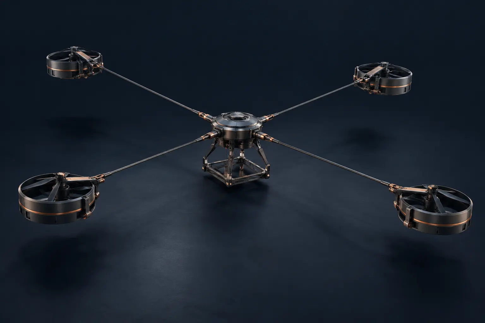

Tensile Scaling
Centrifugally stiffened tension members replace the conventional rigid spar load path. The development objective is to reduce structural mass overhead as rotor scale increases.
ENGINEERING A DIFFERENT LOAD PATH
Centrifugally-Stiffened Rotary-Wing Platforms for Contested Logistics and Kinetic Interception.

01 THE ENGINEERING
Conventional rotor structures resist bending through material stiffness. TensileEra is developing an architecture that uses rotation to tension flexible structural members.
Rotation establishes tension.
Tension carries the structural load.
The linear mass relationship applies to an idealized tension-member model at constant tip speed. Aircraft-level performance also depends on propulsion, controls, materials and operating conditions.
ANALYTICAL BASIS / SYSTEM VALIDATION REQUIREDCentrifugally stiffened tension members replace the conventional rigid spar load path. The development objective is to reduce structural mass overhead as rotor scale increases.
Distributed tip-motor control and active aeroelastic damping are intended to manage the dynamics of a flexible rotating structure.
A mechanical failsafe architecture intended to retain geometry during loss-of-power events. Validation must establish behavior across the operating envelope.
High-voltage DC distribution connects the power-generation architecture to distal propulsion nodes.
ARCHITECTURE / VISUAL STUDY
A conceptual view of a hub, tension members and distributed propulsion. Explore the architecture behind the program.
Inside the system
DESIGN PARAMETERS
Program targets and architecture characteristics.
Target Payload Fraction
(VSG-HL-01)
Calculated Structural
Mass Fraction (SMF)
Rotor Void Fraction
(Kinetic Transparency)
OZO HVDC Powertrain
Architecture (Bench-Tested)
Parameters describe distinct aspects of the architecture; they do not constitute a combined flight-performance claim.
02 THE PLATFORM FAMILY
A development family spanning tactical systems and heavy lift. Platform classes are program objectives, with operational lift on the roadmap.
Sub-5kg Tactical Interceptor
100kg Heavy-Lift Logistics
600kg Operational Lift
Mission-class figures are development objectives. The VSG-HL-01 operating authorization is separately bounded by its 275 lb MTOW and applicable conditions.
03 THE VALIDATION PROGRAM
The program connects structural analysis, component verification and integrated testing. Each result must be tied to a configuration and a defined test condition.
Request a technical discussionTECHNICAL PARTNERSHIPS / PROGRAM INQUIRIES